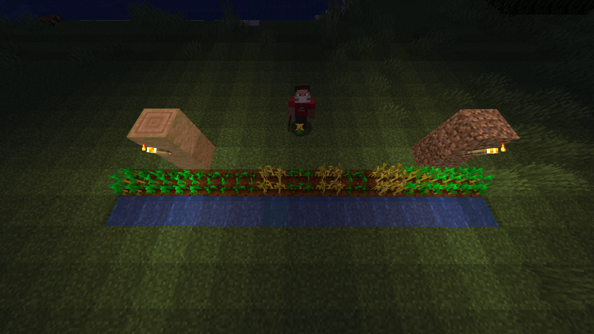

Q1: Solution and Afterthoughts#

Steve's Wheat Farm is arguably the most difficult problem in the entire recess week challenge, so much that Q2 was made easier to allow participants more time to solve Q1.
However, Steve's Wheat Farm is actually not that difficult of a problem if approached correctly. There is really only one advanced programming concept: The Prefix Sum Array (Refer to hints on what is a Prefix Sum Array).
Straightforward (and Naive)#
Let us explore the problem step by step. Let's use an example to visualise
11 0 0 0 0 3 0 3 0 0 0 0
The straightfowrward approach is to
- Visit each block in order (* denotes the current block we are on)
- If there is a light source on that block
- Add the brightness to that block (we shall just skip to the first light source)
- To the block to the right of the current block, add brightness level of the source block, subtracted by 1.
- Repeat this process as we continue going right, subtracting 1 more each time until we reach brightness level 0, or there are no more blocks on the right.
- Repeat above steps for the right side of the block.
After visiting the first light source:
0 0 1 2 3 2 4 0 0 0 0
After visiting the second light source:
0 0 1 2 4 4 4 2 1 0 0
This gives us a time complexity of \(O(n * B_{max})\), where \(n\) is the number of blocks and \(B_{max}\) is the max brightness level of a source.
Naive approach in Python3
n = int(input())
brightness = [0] * n
raws = input().split() # Store the source inputs in an array
for i in range(n):
# Iterate through source inputs, and add them to the final brightness array.
source = int(raws[i])
brightness[i] += source
d = 1 # Represents the current distance away from the source
for j in range(source - 1, 0, -1):
# Decrement brightness level by 1 for each block away from source
if i + d < n:
# If the dth block on right side of the source block is within the given blocks
# Add brightness level due to source block at that block
brightness[i + d] += j
if i - d >= 0:
# If dth block on left side of the source block is within the given blocks
# Add brightness level due to source block at that block
brightness[i - d] += j
d += 1 # Increment distance at each iteration
# Now loop through the array to find the number of blocks that meet
# the optimal brightness condition
count = 0
for source in brightness:
if (source >= 10000 and source <= 30000000):
count += 1
print(count)
The problem with the naive apporach#
We are potentially visiting each block so many times if every block has a source of \(B_{max}\) brightness level. In particular, the step where we "spread" out the light from the light source is incredibly repetitive. is there a way to do things better?
A better approach#
We can use the prefix sum array approach, where we "jot down" the main parameters for the operations that we will need to perform later. For example for any given light source, we can describe its impact on the result array by breaking it down into a few segments:
- The resultant brightness level at any block is the arithmetic sum of the individual resultant brightness levels due to individual light sources around it (something like superposition)
- The resultant brightness level of a block due to a source falls off over distance.
- Conversely, we can rephrase the above statement to: (Taking a left-to-right approach) The resultant brightness level of a block due to a source increases (by 1 per block) as we approach the source, and falls back down(by 1 per block) to zero as we get further away from the source.
- Of course, take note the resultant brightness level of a block due to a source can never be less than zero.
- This means that at \(brightnesslevel\) distance to the left of the source, we should start to increase the brightness level by 1 every block
- Notice that in terms of a prefix sum array, this can be represented by adding +1 to the first block where the brightness level is non-zero (initalise a new array first)
Adding +1 to the first block where brightness level is non-zero
0 0 1 0 1 0 0 0 0 0 0
- Then when we get to the block right after the source, we should reverse this trend (i.e. make it decreasing).
- Notice that we can change the prefix sum trend from +1 to -1, by adding -2 to the block right after the light source.
Adding -2 to the block to the immediate right of the source:
0 0 1 0 1 -2 0 -2 0 0 0
- Eventually, we should stop this decreasing trend right after the block where the brightness level due to this source should become zero.
- This means we should counter the -1 prefix sum trend by adding +1 to the block right after where the brightness level due to the light source should become zero.
0 0 1 0 1 -2 0 -2 1 0 1
Note that the step where we add +1 to start the increasing trend, the index of the source may be negative. To fix that, we can
- Add +1 to the first element of the prefix sum array to denote the increasing trend
- Add the brightness level of the first block (due to the current light source) subtracted by 1, to sort of shared \(base\) variable. We will add this \(base\) variable back to the array later.
- Since we are going from left to right, we don't have to do this treatment for the part on the right of the light source.
All that is left now is to evaluate the prefix sum of our array
base = 0 0 0 1 1 2 0 0 -2 0 -1 -1 0
- Performing prefix sum once will give us the realised total increasing/decreasing trend for each block.
- Add the \(base\) variable back to the first element of the array, since we are going to evaluate the final total brightness levels due to the starting value and the increasing/decreasing trends now, and we need the starting brightness value at the first block.
- Perform prefix sum yet another time on the array. The first element will represent the starting brightness, and apply the trend for the next block at every next block, together with the base value from the previous block.
0 0 1 2 4 4 4 2 1 0 0
Efficiency of improved algorithm#
Notice that we only iterate through the array twice, and during the first set of iteration, we perform a maximum of three array-lookup operations (of \(O(1)\) time complexity) per block, which gives us a total linear time complexity of \(O(n)\)!
The full solution (Python3) can be found below.
Python 3 Full Solution with Prefix Sum
def prefixSum(arr):
# Returns array where each element is the cumulative sum of the elements
# up to its current index in the original array
arr2 = [0] * len(arr)
arr2[0] = arr[0]
for i in range(1, len(arr)):
arr2[i] = arr2[i - 1] + arr[i]
return arr2
n = int(input())
sources = [0] * n # Base Array to perform prefix sum on.
raws = [int(i) for i in input().split()]
base = 0 # Base variable to store the starting value of the array
for i in range(n):
source = raws[i]
if source == 0:
# If the source is zero, there is no need to do anything
continue
if i - source + 1 >= 0:
# Check if the first non-zero brightness level block is within the array bounds
# If it is within bounds, add +1 to indicate the start of the increasing trend
sources[i - source + 1] += 1
else:
# Otherwise, add +1 to the first element of the array to indicate the trend
# and also store the starting brightness level at the first block at base variable
sources[0] += 1
base += source - i - 1
if i + 1 < n:
# If the source is non-zero and not the last block
# Indicate that the trend should be reversed at the next block
sources[i + 1] -= 2
if i + 1 + source < n:
# And indicate where this reverse trend should end
# This should be where the brightness level decreases to zero
sources[i + 1 + source] += 1
# Prefix Sum once gives us the array of total increasing/decreasing trends at each block
pfSources = prefixSum(sources)
# Add base back to the array to set our starting value
pfSources[0] += base
# Prefix sum again to apply the trends from the starting value
res = prefixSum(pfSources)
optimal = 0 # Variable to contain number of optimal blocks
for i in range(n):
# To find the actual light level, add light level of each block due to sources
# in both directions, then add cumulative falloff at each block in both directions
if (res[i] >= 10000 and res[i] < 30000000):
optimal += 1
print(optimal)